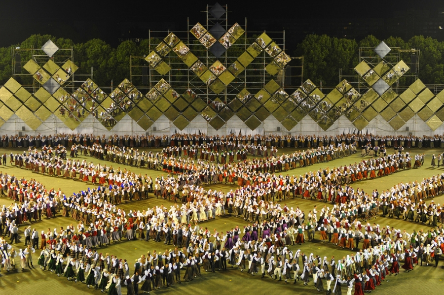

Kā dzima Dziesmu svētki
Autors: Redakcija | Publicēts: 2025. gada jūnijs
Dziesmu svētki ir ne tikai muzikāls pasākums – tie ir dzīvs pierādījums tautas spēkam, identitātei un vienotībai. Šo tradīciju saknes meklējamas 19. gadsimta vidū, laikā, kad latvieši – zemnieku tauta – sāka apzināties sevi kā nāciju. Kustība, kas sākās ar mērķi veicināt kora mūziku, kļuva par politisku un kultūras simbolu.
Pirmie Vispārējie latviešu Dziesmu svētki notika 1873. gadā Rīgā. To organizēja Rīgas Latviešu biedrība un ievērojami kultūras darbinieki, tostarp Juris Neikens un Jānis Cimze. Svētkos piedalījās 1003 dziedātāji un 30 pūtēju orķestru mūziķi. Dziesmas tika dziedātas galvenokārt latviešu valodā – laikā, kad valoda vēl nebija oficiāli atzīta. Tas pats par sevi bija drosmīgs nacionālais akts.
Svētki uzreiz kļuva par sabiedrisku fenomenu. Tie sniedza iespēju satikties cilvēkiem no dažādiem Latvijas novadiem, dalīties pieredzē un stiprināt kopības sajūtu. Tajā laikā Dziesmu svētki simbolizēja cerību – ka nākotnē latvieši spēs dzīvot brīvā, pašnoteiktā valstī.
20. gadsimts svētkiem nesa sarežģītus laikus. Gan Pirmā, gan Otrā pasaules kara laikā pasākumi tika pārtraukti, bet vēlāk, padomju okupācijas gados, tie tika atjaunoti ar cenzētu saturu. Tomēr, pat padomju ideoloģijas ēnā, Dziesmu svētki saglabāja latviskās identitātes kodolu. Daudzi uzskata, ka šī tradīcija bija viens no faktoriem, kas palīdzēja saglabāt nacionālo apziņu un veicināja Trešo atmodu.
1988. gada Dziesmu svētki kļuva par politisku demonstrāciju. Dziesmas “Dievs, svētī Latviju” un “Saule, Pērkons, Daugava” atskanēja kā manifestācijas, ne tikai koncertnumuri. Tūkstoši cilvēku dziedāja ar asarām acīs un karogiem rokās, apliecinot savu gribu atgūt brīvību.
Mūsdienās Dziesmu un Deju svētki tiek rīkoti reizi piecos gados, un tie pulcē vairāk nekā 40 000 dalībnieku. 2008. gadā tradīcija tika iekļauta UNESCO Cilvēces mutvārdu un nemateriālā kultūras mantojuma sarakstā, kļūstot par pasaules mēroga atzītu fenomenu.
Šodien Dziesmu svētki nav tikai pagātnes mantojums – tie ir dzīvs pierādījums tam, ka tauta, kas dzied kopā, nekad nav pavisam pakļaujama. Tās ir gan raudpilnas emocijas Mežaparka Lielajā estrādē, gan bērnu koris mazā lauku skolā. Dziesmu svētki vieno pagātni, tagadni un nākotni vienā balsī.
“Kur dziesma skan, tur nevar būt slikti cilvēki.” – tautas ticējums
⬅ Atpakaļ uz Kultūras sadaļu